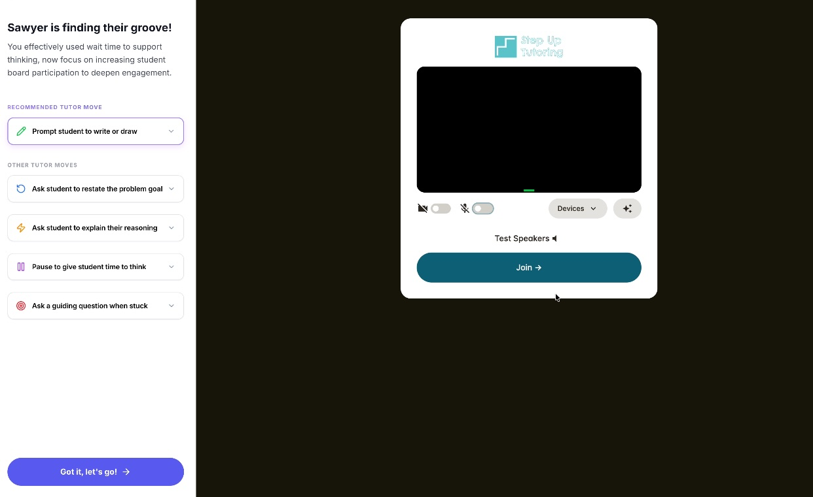

Step Up Tutoring · EdTech Startup
Shaping an AI-Powered Tutoring Platform as Sole Researcher
Owned the full research lifecycle across two key features of the AI tool, leading two phases of mixed-methods research that shaped product direction for an MVP-stage EdTech platform.
Read Case Study →